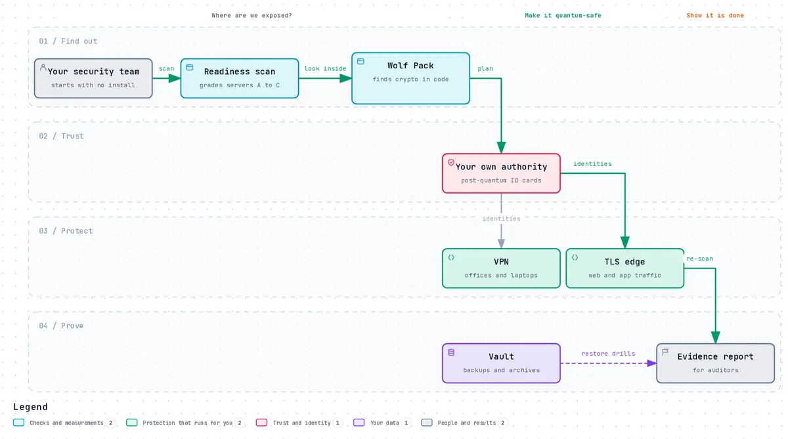
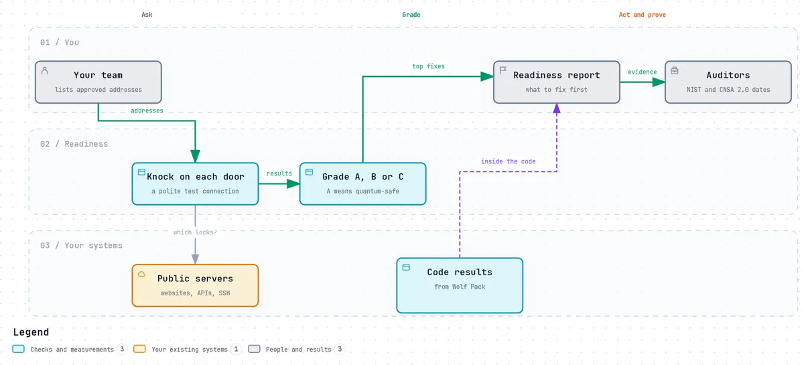
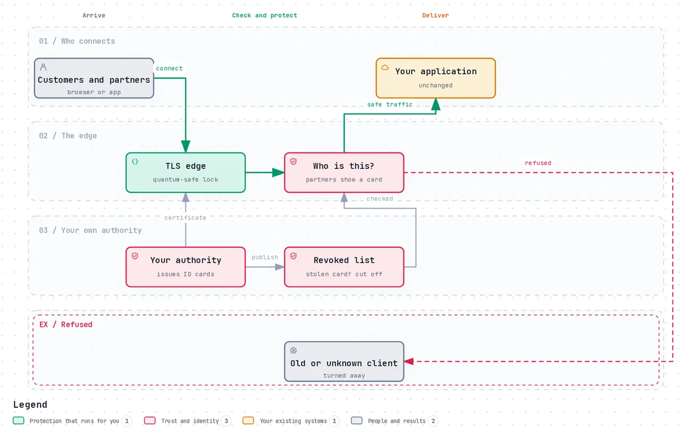
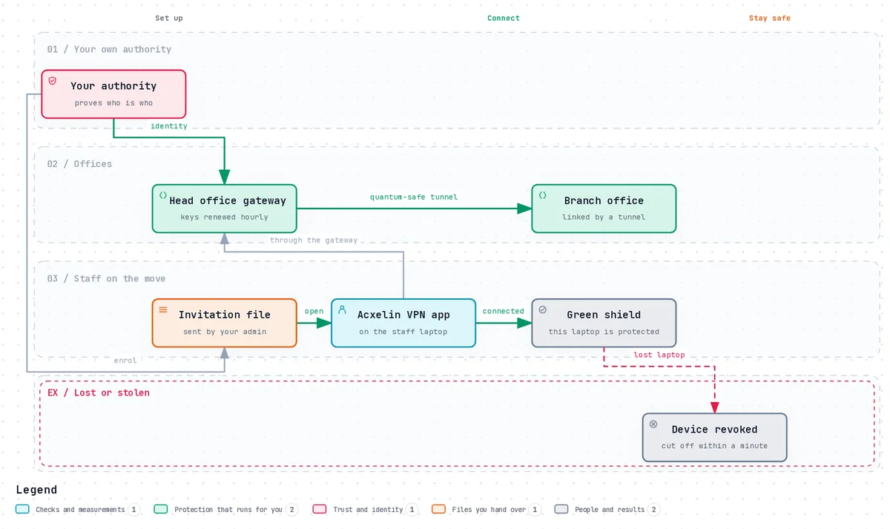
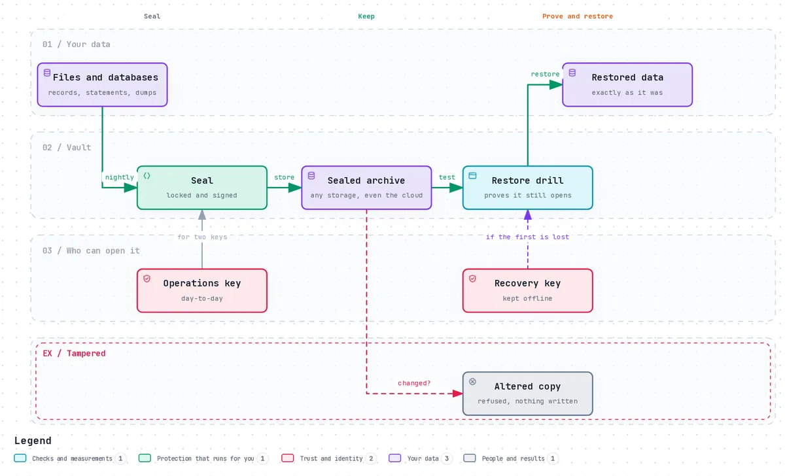
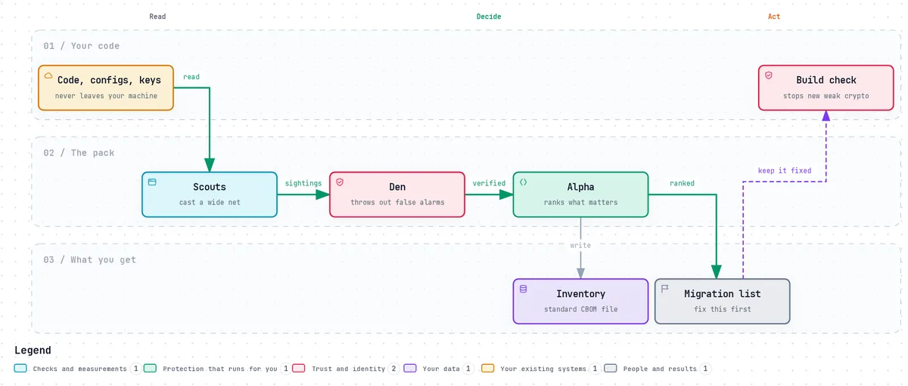

How it works
The whole suite, in plain words.
No code and no jargon you have to know already. Why quantum computers matter for the data you hold today, and what each product does about it, step by step.
The big picture
Why any of this matters now
Almost everything private online is protected by locks that rely on maths problems today's computers cannot solve. A large enough quantum computer will solve them. Nobody has one yet, but anyone can record your encrypted traffic today and open it the day they do. That is why regulators want the old locks gone by 2030 and banned after 2035.
Four steps, in this order
- Find out where you are exposed: your servers from the outside (Readiness), and the code inside (Wolf Pack).
- Trust: set up your own authority, which gives every server, office and laptop a post-quantum ID card.
- Protect what moves and what is kept: web traffic (TLS edge), links between sites and laptops (VPN), and backups (Vault).
- Prove it: scan again and hand auditors a report with every asset and its deadline.
What stays true throughoutEverything runs on your own machines. Nothing is sent to us, and no step depends on a service we run.

Open the interactive diagramFind out · Readiness assessment
Where do we stand today?
Before changing anything, you need to know which of your servers still use locks a quantum computer could open, and which to fix first.
What happens
- You list the public addresses you are allowed to check: websites, APIs, mail and SSH servers.
- Readiness knocks on each one with a polite test connection, the same way any visitor would, and asks which locks it offers.
- Each server gets a grade: A post-quantum only, B post-quantum with a fallback for old visitors, C classical only.
- Add Wolf Pack's results if you like, so the cryptography inside your code sits next to your servers.
- You get a report that says what to fix first, and the dates the standards set for each item.
What you end up withA ranked list of what to fix, and evidence an auditor can read. It changes nothing and reads nothing private.

Open the interactive diagramProtect · TLS 1.3 + mTLS
How do we protect web and app traffic?
Your websites and APIs were built years ago and you do not want to rewrite them. You want them quantum-safe anyway.
What happens
- You set up your own authority. It issues ID cards (certificates) signed with post-quantum signatures.
- A small TLS edge goes in front of each service. Visitors connect to the edge; the service behind it does not change.
- Partners and internal systems show their own ID card, so only the ones you trust get through.
- If a card is stolen, you revoke it, and the edge refuses it at the next connection.
- Visitors that can only use old locks are turned away, or, if you choose the transition setting, still served while everyone else moves on.
What you end up withEvery connection to the service uses a post-quantum lock, without touching the service itself.

Open the interactive diagramProtect · VPN
How do we link offices and laptops safely?
Branch offices and remote staff send everything over the internet. A recording made today should stay unreadable.
What happens
- Your authority gives each office gateway and each staff member an identity.
- Offices are linked by tunnels whose keys come from a post-quantum handshake and are renewed every hour.
- For laptops, your admin sends one invitation file. Staff install the Acxelin VPN app and open it.
- The app connects through the head office gateway and shows a shield: green means this laptop is protected.
- If the tunnel drops, a kill switch stops traffic leaking out unprotected. A lost laptop can be revoked and is cut off within about a minute.
What you end up withOffices and staff connected through tunnels that a future quantum computer cannot read back.

Open the interactive diagramProtect · Vault
How do we keep backups private for decades?
Backups, statements and medical records are kept for years. They need to stay private long after quantum computers arrive.
What happens
- On a schedule you set, for example every night, Vault seals your files and database dumps with a post-quantum lock and signs them.
- Every backup opens with two keys: one for day-to-day work and a recovery key kept offline, so losing one never loses the data.
- Sealed archives can live anywhere, even cloud storage you do not fully trust.
- Restore drills prove the archives still open, without writing anything.
- If even one bit of an archive is changed, Vault refuses it. You can let an auditor open one archive without sharing your key.
What you end up withBackups only your chosen keys can open, that you have proven you can restore.

Open the interactive diagramAlso from Acxelin · Wolf Pack CBOM
What cryptography is hiding in our code?
Servers are only half the story. Old locks also live inside your own software, configuration files, keys and the programs you depend on.
What happens
- Wolf Pack reads your code, configuration, keys and programs on your own machine. Nothing is uploaded.
- Its scouts cast a wide net and report anything that looks like cryptography, on purpose more than needed.
- The den checks the evidence and throws out false alarms, like a name in a comment.
- The alpha ranks what is left by how exposed it is and how long the data must stay secret.
- You get a migration list, a standard inventory file (a CBOM), and a build check that stops new weak cryptography.
Honest limitsOn code it had never seen, 89% of what it reported was right, but it found only 34% of what was there. It is a strong start, not a guarantee.

Open the interactive diagramWords you will meet
A short glossary
- Quantum computer
- A new kind of computer. A large one could open the locks that protect most data today.
- Harvest now, decrypt later
- Recording encrypted traffic today to open it once such a computer exists.
- Post-quantum
- New locks (ML-KEM) and signatures (ML-DSA, SLH-DSA), standardised by NIST in 2024, that a quantum computer cannot open.
- Hybrid
- An old and a new lock used together, so both would have to be broken. The suite's default.
- Certificate
- An ID card for a server, office or person, signed by an authority you trust.
- Your own authority
- The service that issues and revokes those ID cards for your organisation.
- Revocation
- Cancelling an ID card, for example when a laptop is lost.
- CBOM
- A cryptography bill of materials: a standard list of every algorithm a system uses.
See it on your own systems
Start with a free readiness scan of addresses you choose. We go through the results with you.
- Try it now
- The console with example data